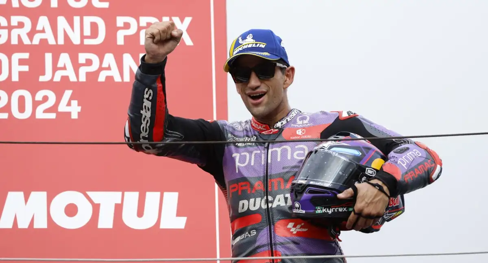
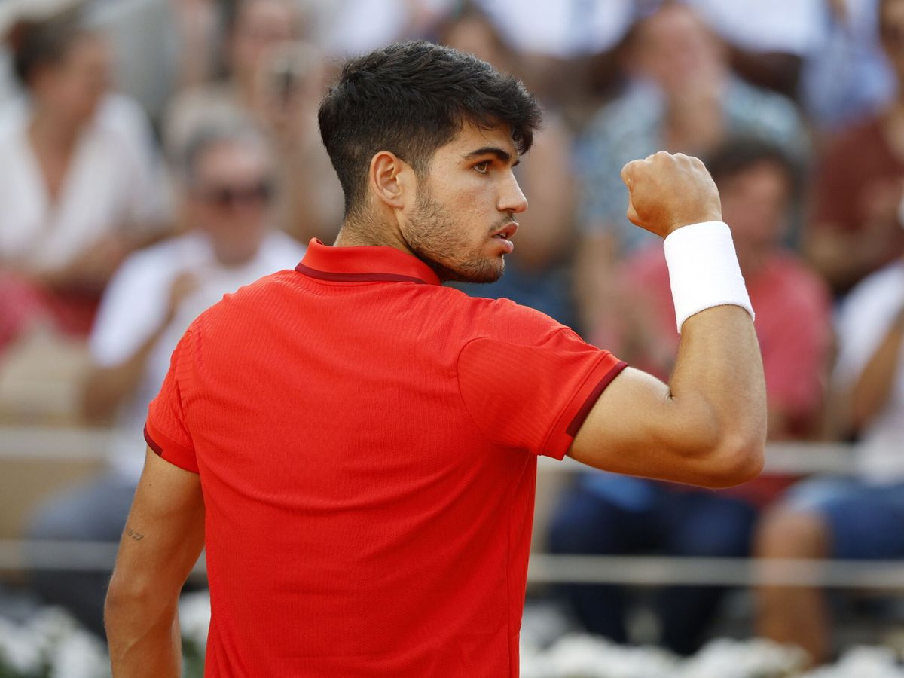

La gran remontada del español, segundo en la prueba, le permite mantenerse líder pese al doblete del italiano. Marc Márquez repitió el tercer puesto de la 'sprint race'

Jorge Martín firmó una gran remontada en Motegi que, a la postre,
le valió para mantenerse como líder del campeonato, frente a un
Pecco Bagnaia absolutamente implacable en el Gran Premio de Japón
de MotoGP. El italiano, con otra carrera sin fallos, repitió la
victoria conseguida en la sprint race y afronta la próxima cita de
Australia colocándose a diez puntos de su gran rival en la general.
Marc Márquez, mientras, retomó de nuevo sus buenas sensaciones
repitiendo el tercer escalón del podio logrado este sábado. Y
Pedro Acosta, por su parte, sufrió una nueva caída que le llevó a
abandonar finalmente la prueba, por mucho que tratara de continuar
casi hasta el final, y que amargó aún más la alegría obtenida al lograr
la pole el sábado.
Bagnaia se mostró muy fuerte desde la salida, en una sesión siempre
amenazada por la lluvia. Por mucho que Acosta tratara de discutirle
inicialmente la primera plaza, el italiano impuso su ritmo, altísimo
a lo largo de toda la carrera, y empezó a marcar distancias con el
resto del grupo. Jorge Martín, pese a salir desde el puesto 11 de
la parrilla, logró encaramarse muy pronto hasta una momentánea cuarta
posición, con Marc Márquez haciendo también lo propio para colocarse
provisionalmente en la quinta.
Tras la caída de Acosta, el de San Sebastián de los Reyes se las
arreglaría para pasar a Binder y arrancar así su lucha por presionar
al cabeza de carrera, al final sin premio. El de Cervera, finalmente,
sería quien acabaría siguiéndolos a ambos algo más lejos, desde un
tercer puesto que conservaría hasta la caída de la bandera a cuadros
y que le permitió así retomar la racha positiva quebrada por su rotura
de motor en Indonesia.
"Ha sido una carrera súper aburrida, sin adelantamientos, solo manteniéndome
ahí. Pero bueno, estoy muy contento, porque ha sido un fin de semana
difícil, pero estamos otra vez en el podio", resumió el propio Márquez
al término de la prueba. "Estoy contento con el resultado. Creo que
hemos hecho una carrera fabulosa. Al estar tan cerca de Pecco, siempre
quise intentar ir a por el primer puesto, nunca tiré la toalla, pero,
a dos vueltas del final, tuve un susto y pensé que era el momento de
relajarse y pensar en los puntos", aportó Martín.
Para leer mas información sobre esta noticia pinchar aquÏ
El ganador de Wimbledon y Roland Garros se impone tas casi tres horas y media (6-7 [6], 6-4, 7-6 [3]), pese a sumar 52 errores no forzados.

El número tres mundial (será dos tras este triunfo), Carlos Alcaraz,
derrotó en tres reñidos sets a Jannik Sinner, en lo más alto de la
tabla, para conquistar el ATP 500 de Pekín, el 16º título de su
carrera. El duelo entre los dos tenistas llamados a dominar el
circuito en los próximos años, que esta temporada se han repartido
los títulos de Grand Slam (dos para cada uno), se lo llevó el español
en casi tres horas y media. [Narración y estadísticas (6-7 [6], 6-4,
7-6 [3])]
Como suele ser habitual en Alcaraz, alternó momentos de gran brillantez
(55 golpes ganadores por solo 30 de su rival) en el juego con sus
clásicas desconexiones (52 errores no forzados a 31. Esa irregularidad
le impidió, por ejemplo, cerrar el primer set con su servicio luego
de haber tomado la iniciativa desde el inicio.
Tampoco aprovechó el español hasta tres bolas de break (uno de los puntos
a mejorar en su juego) para apuntarse el primer parcial, una con 6-5 a
favor y otras dos en el 'tie break'. Demasiados regalos para el número
1 mundial, que en la primera ocasión que tuvo para apuntarse el primer
set no la desaprovechó.